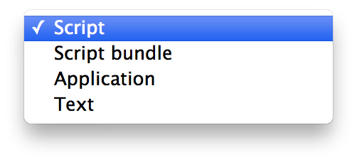

While AppleScript Libraries can vary in the complexity of their design and implementation, their purpose is the same: to provide easy access in scripts to collections of specialized commands and handlers.
An AppleScript Library’s source code may be written in standard AppleScript, or it may employ AppleScript/Objective-C to access methods and classes from standard Cocoa frameworks such as Foundation and AppKit, and even import specialized frameworks such as MapKit, EventKit, or WebKit.
Regardless of the kind of AppleScript Library you create, the process of creating the library is similar for every type:
Script code containing routines and handlers, is placed into a script file or bundle, which is then saved and placed into the Script Libraries folder to become available for use by other scripts.
Follow the steps detailed below to create and use a simple AppleScript Library.
To create a simple AppleScript Library, written in AppleScript, open a new script document in the AppleScript Editor application. Save the new document as a standard script file by choosing Script from the Format popup menu in the Save dialog (see below):

For this example, name the script: Simple Case Changer. By default, the saved script file will have a name extension of “scpt”.
The script code for this example is an AppleScript handler for changing the case of text to either all upper or all lower case. The handler has two parameters: the text to be transformed, and a number indicating which case conversion to apply to the passed text.
on changeCaseOfText(sourceText, caseIndicator)
if caseIndicator is 0 then
set the comparisonCharacters to "ABCDEFGHIJKLMNOPQRSTUVWXYZ"
set the sourceCharacters to "abcdefghijklmnopqrstuvwxyz"
else
set the comparisonCharacters to "abcdefghijklmnopqrstuvwxyz"
set the sourceCharacters to "ABCDEFGHIJKLMNOPQRSTUVWXYZ"
end if
set the newText to ""
repeat with thisCharacter in sourceText
set x to the offset of thisCharacter in the comparisonCharacters
if x is not 0 then
set the newText to ¬
(the newText & character x of the sourceCharacters) as string
else
set the newText to (the newText & thisCharacter) as string
end if
end repeat
return the newText
end changeCaseOfText
Next, copy the text of the handler and paste it into the blank script file you created. Compile the script, save, and then close the script file.
AppleScript Libraries are installed and made available for use by AppleScript scripts, by placing their files within a folder titled: “Script Libraries”. A Script Libraries folder can reside in a variety of locations, depending on how you want to define their availability on the computer.
The easiest way to install an AppleScript Library for the current user is to make a new folder in your Home > Library folder, titled Script Libraries. Next, place your saved script file into the newly created Script Libraries folder. That’s all you need to do!
For detailed information on other available installation locations, read the Installing and Deploying AppleScript Libraries segment on the overview page of this topic.
Once installed, the handlers contained in AppleScript Libraries can be accessed by AppleScript scripts directly via tell statements or tell blocks. Copy the script text below, paste it into a new script window, and run.
tell script "Simple Case Changer"
set the adjustedText to changeCaseOfText("How now brown cow.", 1)
--> result: "HOW NOW BROWN COW."
end tell
The passed text will be sent to the handler in the targeted AppleScript Library, which will be then executed, returning the source text transformed into all upper case characters.
A simple example of a simple AppleScript Library.